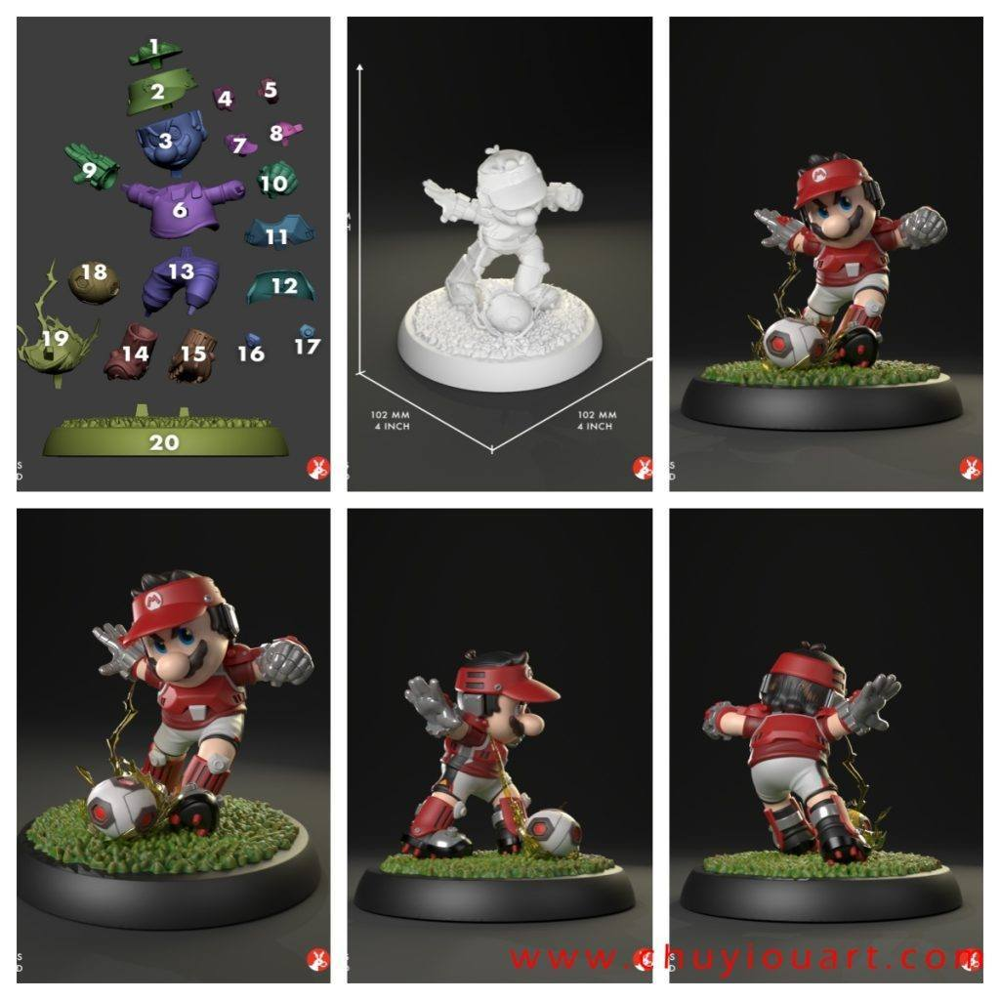
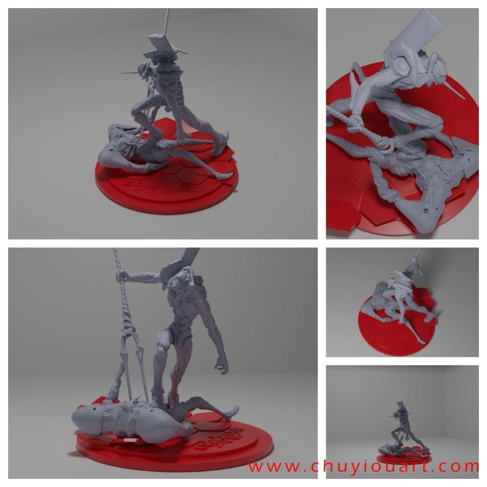
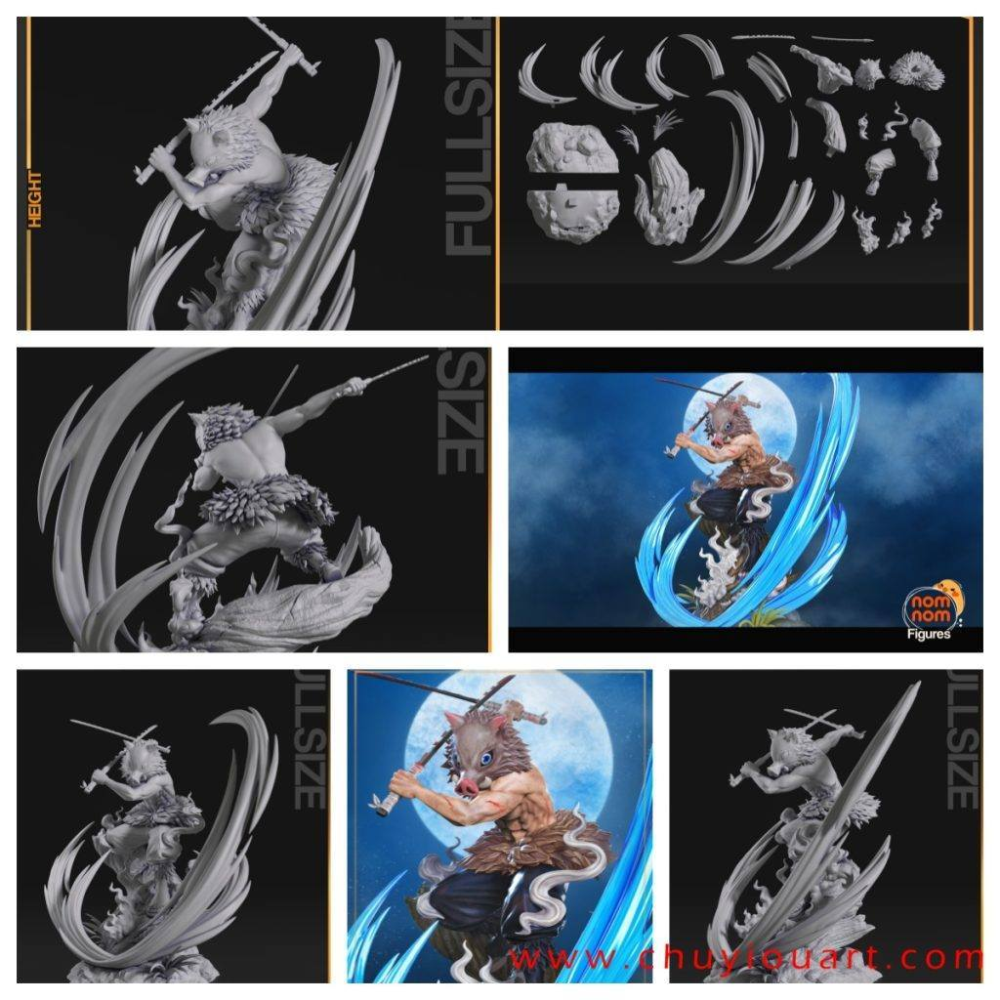

12月20日STl图纸文件分享
提取码
4i48今天分享的包括三个马里奥系列模型，带场景的造型表现十分出色；金克斯的细节与分件设计优秀，体现较高完成度；鬼灭之刃的伊之助模型动态逼真、细节还原度高；此外还有一款EVA小场景，适合粉丝和用于练习打印及涂装。



链接:
https://pan.baidu.com/s/1eDlLItN2_LeyjpcsBX3kxQ 提取码: 4i48
以上内容仅供个人使用（非商用）
ONLY for PERSONAL (NON-COMMERCIAL) use.
加群获得更多免费模型！